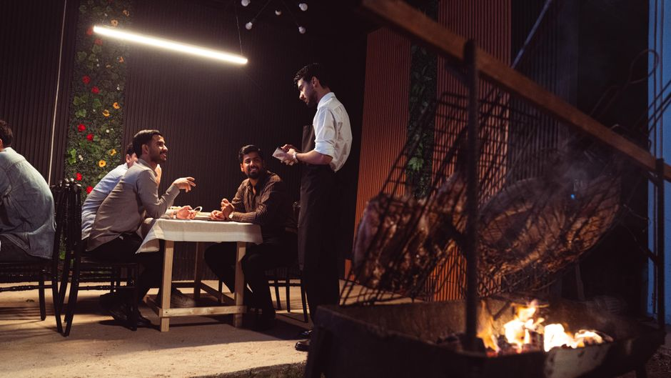

Follow every answer.
Trace a claim to the system and record behind it. Evidence stays connected to the answer.
Your world, understood.
Your day, given back.
Your business already has the information. It lives across systems that speak different languages. LOVELEEDAY brings them into a shared understanding — connecting what happened, what it means, and what deserves your attention.
Arthur connects context, preserves memory, and grounds answers in evidence. The intelligence system behind LOVELEEDAY — working beneath the surface, so you can see the whole picture.
Which names refer to the same company?
Which records belong to it?
Where did each observation come from?
Can we trace the answer?
One company. Connected across its different names.
Ontology example · alias matched to a canonical objectStart with a question.
Follow the answer back to its source.
One company. Several names.
FES and Fintech Equipment Services resolve to the same company, alongside its vendor ID and Stripe customer record.
Illustrative interaction using examples from the supplied source. No live systems connected.
A municipality. A hospitality group. A growing retailer. A portfolio of companies. Each has a different world of information.
The architecture connects identity, context, and evidence around the question that matters to you. These workflows are a starting point, not the limit.
The purpose of a clearer picture is knowing where to put your attention. And having more of it left for the people, places, and moments that matter.
The intelligence behind itFive connected layers turn fragmented information into a coherent view of your world.
A company can have a name in your inbox, an ID in your ledger, and an alias in conversation. The object layer connects them to one identity, so context follows the company.
Trace a claim to the system and record behind it. Evidence stays connected to the answer.
Preserve what was true and when it became known. New information adds context without erasing history.
Standing conditions watch for changes that matter, bringing a decision back into focus when its assumptions shift.
